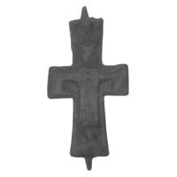

Catalog › CE-0397 · LOV2008-8
Valvă izolată de encolpion (fața), cat. 8, colecție privată Pécs
nedatat · Comitatul Komárom (loc indicat ca „állítólag”), Ungaria · Colecție privată, Pécs (Ungaria)
single valve of a reliquary cross, bronz; nedatat; find spot unknown; kept at Colecție privată, Pécs (Ungaria).


Identificare
- Categorie
- Valvă izolată
- Material
- Bronz
- Dimensiuni
- Î 62 × L 36 mm
Iconografie
- Avers
- Răstignirea (Hristos în colobium)
- Descriere avers
- Fața unui encolpion, cruce latină cu brațele lărgite și cu capetele drepte, cu câte o ureche de închidere sus și jos. La mijloc Hristos în relief, cu nimb, cu capul ușor aplecat spre umărul drept; poartă colobium, tunică lungă fără mâneci, cu pliuri verticale și decolteu în V; brațele sunt întinse orizontal. La capetele brațelor verticale și de ambele părți, sub mâinile lui Hristos, câte un bust; figura de sus își încrucișează mâinile pe piept.
- Descriere revers
- Pe spatele plăcii, margine turnată de 2 mm care o înconjoară.
- Limba
- Fără inscripție
Datare și atribuire
- Datare
- nedatat
- Centru
- Necunoscut
Descoperire
- Regiune
- Comitatul Komárom (loc indicat ca „állítólag”)
- Țară
- Ungaria
- Context
- Colecție (fără context)
- Coordonate
- 46.0727° N, 18.2323° E
- Precizia locului
- Loc de păstrare (loc de descoperire incert)
Păstrare și referințe
- Colecție
- Colecție privată, Pécs (Ungaria)
- Bibliografie
- Zs. Lovag, Árpád-kori mellkeresztek, în volumul Kovács László 70 (SZTE), 2008, p. 493–497 [Lovag 2008], p. 495, cat. nr. 8, reprodusă la 8. kép (p. 497).
- Figura
- 8. kép
- Planșe
- Lovag 2008, p. 497
- Analogii
- Autoarea o așază într-o varietate de encolpioane de tip palestinian (szentföldi típus), mai multe exemplare cunoscute în Ungaria; singurul cu circumstanțe de descoperire cunoscute: Tiszaörvény-Templomdomb, mormântul de copil nr. 440 (Lovag 1999, Nr. 8; Horváth 1970).
- Observații
- Autoarea o numește „ereklyetartó mellkereszt előlapja” (fața unei cruci pectorale-relicvar). Foarte tocită, îndoită; lângă picioarele lui Hristos o gaură, din defect de turnare sau din subțierea materialului. Dimensiuni: înălțime 6,2 cm (7,3 cm cu urechile de închidere), lățime 3,6 cm. Locul descoperirii: după spusa proprietarului, comitatul Komárom (komárom megye). Autoarea notează că piesa nu ține de tema articolului (nota 18). Locul descoperirii nu e cunoscut cu precizie; punctul de pe hartă marchează locul de păstrare (Colecție privată), nu locul descoperirii. Coordonate: nu sunt date în sursă.
Citare: Corpus Encolpiorum, CE-0397, Valvă izolată de encolpion (fața), cat. 8, colecție privată Pécs, --root/piese/LOV2008-8/ (accesat 2026-10-20).